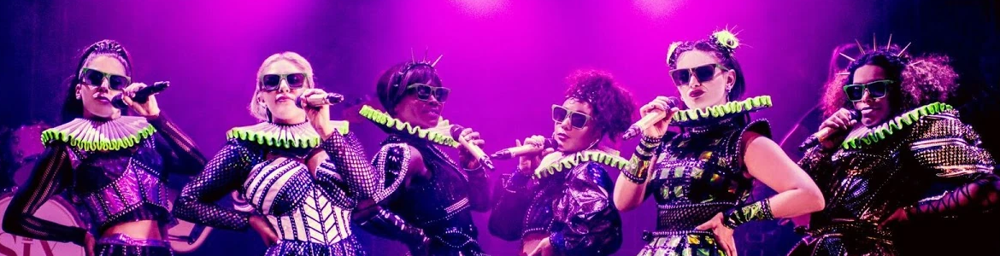

This Just In; Six: The Musical Is Still Really Good
• Published 08/05/2025
I was never really the musical type of person, like, literally. I didn’t learn any instruments as a kid and couldn’t sing, although somehow I ended up in my town church’s choir. I did enjoy some musicals though, since I grew up with shows like Hannah Montana and My Little Pony, but it took me a bit to find a musical I was totally in love with, until my best friend introduced me to Six: The Musical when we were about 13 or 14.
Six is a concert musical about the 6 wives of one of the worst kings to ever “grace” the earth, King Henry the VIII. His wives are essentially turned into Ariana Grande-esque popstars, each with their own song. The musical is set up like a scripted concert, with the queens fighting over the title of most unlucky wife, and the songs are there for the audience to decide which of the 6 queens had the worst time being shacked up with the sweatiest looking king to date. There’s 3 songs in which the entire cast sings, and the other 6 songs are the queens’ individual numbers.
I managed to watch the pro-shot recently in the cinema, and wow, it really solidified the fact that my tastes haven’t changed since I was 13, and that Six is an amazing musical. Getting it out of the way, the pro-shot looked fantastic, and the first few minutes that were dedicated to the cast and the fans was very heartfelt. The lighting in the theatre it was shot at was amazing and it made the costumes look so good (I only saw them pixilated via a recording someone took that was posted on Youtube). It also featured my favourite cast, the original West End cast, and they sounded amazing. I’m not totally sure if their vocals were adjusted, but I doubt that they had to do much work, they’re truly a skilled bunch.

Although done in a bit of a bizarre way, I think this website tries its best to humanize the queens. I think historical musicals like Six and Hamilton are always going to be slightly inaccurate to some degree, but I feel as though Six tries to bring to light both the tragedy and legacy of these queens, because they are truly reduced to being wives of some guy that had a lot of wives. Some queens had more to write about in their songs, in my opinion, but none of them were left in the dust, and no song that was specifically dedicated to a queen was under 4 minutes. To think that this musical was written by 2 university students is insane. I hate ranking stuff I like, but here’s my ranking of the songs:
1. Haus of Holbein - Six
2. All You Wanna Do – Katherine Howard (All-time fav! Played by Aimie Atkinson)
3. Don’t Lose Ur Head – Anne Boleyn (Played by Millie O’Connel)
4. No Way – Catherine of Aragon (Played by Jarneia Richard-Noel)
5. Get Down – Anne of Cleves (Played by Alexia McIntosh)
6. Ex-Wives - Six
7. I Don’t Need Your Love – Catherine Parr (Played by Maiya Quansah-Breed)
8. Six – Six
9. Heart Of Stone – Jane Seymour (Played by Natalie Paris)
Six is a wonderfully good time, even if you didn’t manage to catch the pro-shot in theatres, listen to the recordings. It’ll tug at your heartstrings a bit, but the queens do realize how ridiculous their situation is, so there’s no shortage of comedy. Also, get the CD if you can, the booklet that comes with it is absolutely adorable.
- Where to listen
- Apple Music
-
 Buy the CD
Buy the CD
- Spotify
- Youtube Music